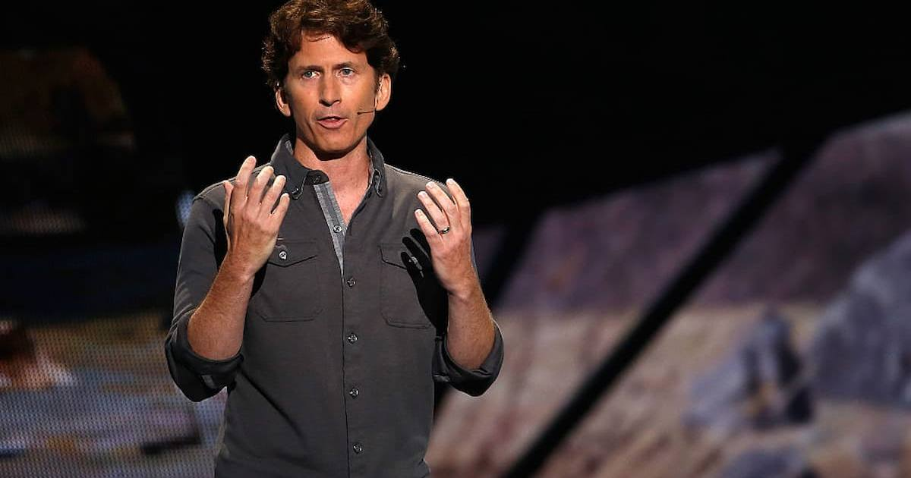

The Elder Scrolls VI Has a Name at Last: Sentinel
Eight years after The Elder Scrolls VI was first announced, Bethesda finally gave it a full title — The Elder Scrolls VI: Sentinel — in a video celebrating the studio's 40th anniversary. No release date, no gameplay, just a name — and a desert.

After more than eight years of silence, Bethesda finally said the word. The Elder Scrolls VI is called The Elder Scrolls VI: Sentinel, studio chief Todd Howard revealed on November 3 at the end of a video celebrating Bethesda Game Studios' 40th anniversary. No release date. No platforms. No gameplay. Just a title card, a few seconds of desert, and the loudest single word in gaming in years.
How the reveal actually happened
The announcement came in a video looking back at the studio's history, with Howard turning at the end toward Bethesda's future. The teaser that followed is brief: a camera looking down on the crest of a dune, the Bethesda Game Studios logo flashing as it zooms in, and the wind unearthing an Elder Scroll — complete with an inlaid blue gem and surrounding golden runes. The background cuts to black, the runes hang in the dark, and then the wordmark appears: The Elder Scrolls VI: Sentinel.
Xbox Wire posted the anniversary video and the name reveal on the morning of November 3. Bethesda's own follow-up was deliberately short: development continues, and it will be "some time" before there is more to share.
What the name tells us — and what it doesn't
Sentinel is the capital city of Hammerfell, the desert province on Tamriel's western coast, home of the Redguards. To Hammerfell's northeast is Skyrim; to its southeast is Cyrodiil, where Oblivion takes place. The dune in the teaser fits a province predominantly known for its deserts, and reports ahead of the reveal had already pointed to Hammerfell as the setting.
But be precise about what Bethesda actually confirmed: the title. The studio has not officially announced the game's setting, its story, or its platforms, and the teaser contains no combat, exploration, or gameplay footage of any kind. The Hammerfell reading is the overwhelming consensus of every outlet covering the reveal — and it is a very good reading — but it is still a reading, not a Bethesda announcement.
The teaser does drop one more lore breadcrumb. It closes with a quote attributed to Yazar, a Moth Priest in service to High Queen Iradne of Hammerfell, dated 4E 206: "The scroll offered only a shimmer, a veil thinly lifted to my eyes. A future lost. A victory undone. Sand of time scattered by fate." Skyrim begins in 4E 201, so a quote dated five years later strongly implies Sentinel takes place after Skyrim — not a prequel, and not set between earlier games. Whether the game itself is set in 4E 206 or later is still unclear, and Yazar and Iradne are best read as the first two names attached to the game, not confirmed characters with confirmed roles.
The wait is not over
Here is the cold water, and it matters. Bloomberg's Jason Schreier said on the day of the reveal that the game is still more than two years away. If that reporting holds, Sentinel does not launch before 2028 — a full decade after the game was first announced in June 2018. Bethesda has confirmed no window of its own, so treat 2028 as the earliest date consistent with Schreier's reporting, not as an official date.
That is the strange shape of this reveal: eight years to get a subtitle, and at least two more years to get the game. Fans spent the day celebrating a word, because after eight years, a word is progress. The 40th-anniversary video was a celebration of a studio's past — and, for the first time in years, a real signal about its future. It just isn't a release date, and nobody should pretend it is.
Why this one matters anyway
The Elder Scrolls is one of the few franchises where a title reveal alone moves the whole industry's calendar. Skyrim, released November 11, 2011, is approaching its 15th anniversary, and it has been re-released on essentially everything with a screen since. A new mainline Elder Scrolls game is not just another release — it is the kind of game other publishers schedule around. Sentinel's reveal, even as just a name, finally gives that future a shape: a desert province, a Redguard capital, a prophecy dated five years after Skyrim, and a wait that is measured in years, not months.
Sources: CBR: Sentinel setting and timeline placement revealed in new trailer · KeenGamer: Sentinel title and logo revealed in new trailer · Gadgets360: Bethesda confirms Sentinel title, launch reportedly more than 2 years away · Parade: Bethesda finally reveals Elder Scrolls 6 title after 8 years
Gear up: Razer — mice, keyboards, headsets and laptops.